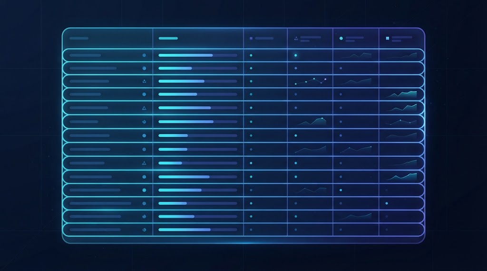

اگر تا حالا شنیدهاید «فلان عکس موقعیت مکانیاش هنوز داخلشه» یا «مدل گوشیت رو از روی عکس فهمیدن»، منبع همهی اینها یک چیز است: اگزیف. در این مقاله قدمبهقدم توضیح میدهیم اگزیف چیست، چرا وجود دارد و چطور میتوانید آن را ببینید یا مدیریت کنید. اگر فقط دنبال راه سریع پاککردن هستید، میتوانید مستقیم به ابزار رایگان عکس متانما بروید؛ اما پیشنهاد میکنیم چند دقیقه وقت بگذارید و کامل بخوانید تا دقیقاً بدانید با چه چیزی طرف هستید.
اگزیف دقیقاً چیست؟
EXIF مخفف عبارت Exchangeable Image File Format است — یک استاندارد بینالمللی که مشخص میکند دوربینها و گوشیها چطور اطلاعات فنی دربارهی هر عکس را داخل همان فایل ذخیره کنند. این اطلاعات از خود تصویر جدا هستند؛ یعنی اگزیف هیچربطی به پیکسلهایی که میبینید ندارد، بلکه مثل یک برچسب نامرئی به فایل چسبیده است.
از کجا آمد و چرا وجود دارد؟
استاندارد اگزیف در دههی ۱۹۹۰ توسط انجمن صنایع الکترونیک ژاپن (JEITA) برای دوربینهای دیجیتال تعریف شد. هدف اولیه ساده بود: به عکاسان کمک کند بفهمند هر عکس با چه تنظیماتی گرفته شده — دیافراگم چقدر بوده، سرعت شاتر چند بوده، فلاش روشن بوده یا نه. بعدها با ورود GPS به موبایلها، فیلد موقعیت مکانی هم به این استاندارد اضافه شد و همینجا بود که اگزیف از یک ابزار صرفاً فنی، به موضوعی مرتبط با حریم خصوصی تبدیل شد.
مهمترین فیلدهای اگزیف
اگزیف میتواند دهها فیلد مختلف داشته باشد، اما اینها پرکاربردترینها هستند:
- Make / Model: سازنده و مدل دقیق دوربین یا گوشی.
- DateTimeOriginal: تاریخ و ساعت دقیق لحظهی ثبت عکس.
- GPSLatitude / GPSLongitude: مختصات دقیق مکانی که عکس گرفته شده.
- ExposureTime، FNumber، ISO: تنظیمات فنی عکاسی.
- FocalLength: فاصلهی کانونی لنز استفادهشده.
- Software: نام آخرین نرمافزاری که فایل را ویرایش یا ذخیره کرده.
- Artist / Copyright: نام عکاس یا صاحب حق نشر، در صورتی که ثبت شده باشد.
- Orientation: جهت چرخش تصویر (برای نمایش درست در پلیرها).

اگزیف کجای فایل قرار دارد؟
در فایلهای JPEG، اگزیف داخل یک بخش بهنام APP1، درست بعد از هدر ابتدایی فایل، ذخیره میشود. این یعنی وقتی یک برنامهی نمایش عکس فایل را باز میکند، میتواند این بخش را قبل از رسیدن به دادهی اصلی تصویر بخواند. همین ساختار باعث میشود ویرایش اگزیف، بدون دستزدن به کیفیت تصویر، از نظر فنی امکانپذیر باشد — دقیقاً همان کاری که ابزارهایی مثل متانما انجام میدهند.
چرا اگزیف میتواند مفید باشد؟
اگزیف همیشه دشمن نیست. برای عکاسان حرفهای، اطلاعات فنی هر عکس کمک میکند بفهمند چه تنظیماتی برای چه شرایطی بهتر جواب داده. برای کاربران عادی، تاریخ دقیق عکس کمک میکند گالری تلفن یا سرویسهای ابری، عکسها را بهدرستی مرتب و آلبومبندی کنند. و برای پلیس یا تحقیقات حقوقی، اگزیف گاهی به شناسایی محل یا زمان وقوع یک رویداد کمک کرده است.
چرا اگزیف میتواند خطرناک باشد؟
مشکل از جایی شروع میشود که همین اطلاعات، بدون اطلاع شما، همراه عکس به اشتراک گذاشته شود. چند مثال واقعی:
- عکسی از داخل خانه برای فروش وسیله در سایتهای آگهی، که آدرس دقیق را از طریق GPS فاش میکند.
- عکس گروهی که تاریخ و مکان دقیق یک سفر یا رویداد خصوصی را نشان میدهد.
- عکسی که مدل دقیق و حتی گاهی شمارهی سریال دوربین گرانقیمت شما را افشا میکند — اطلاعاتی که برای سارقان جذاب است.
فقط چند ثانیه طول میکشد تا ببینید عکس شما چه اطلاعاتی حمل میکند — و در صورت نیاز، آنها را پاک یا ویرایش کنید.
چطور اگزیف عکس خودم را ببینم؟
- عکس را در ابزار عکس متانما رها کنید.
- در تب «خلاصه»، مهمترین فیلدها (دوربین، تاریخ، موقعیت مکانی در صورت وجود) را میبینید.
- برای دیدن فهرست کامل و خام تمام فیلدها، به تب «همهی دادهها» بروید.
بعد از دیدن اگزیف چه کار کنم؟
بستگی به هدف شما دارد:
- اگر میخواهید همهچیز پاک شود، به راهنمای حذف کامل متادیتا سر بزنید.
- اگر فقط موقعیت مکانی مهم است، راهنمای تغییر GPS را ببینید.
- اگر میخواهید فیلدهای خاصی مثل تاریخ یا نام عکاس را اصلاح کنید، راهنمای ویرایش متادیتا کمکتان میکند.
اگزیف در برابر متادیتای PNG و WEBP
اگزیف در اصل برای JPEG طراحی شده، اما فرمتهای دیگر هم متادیتای خودشان را دارند. PNG میتواند تگهای متنی ساده (مثل نویسنده یا توضیحات) و گاهی حتی بلوکهای XMP کامل داشته باشد. WEBP هم میتواند اطلاعات مشابهی حمل کند. خبر خوب این است که برای پاکسازی کامل، نیازی نیست نگران تفاوت فرمتها باشید — گزینهی «حذف کامل متادیتا» در متانما برای هر سه فرمت (JPEG، PNG، WEBP) یکسان و مؤثر عمل میکند.
اگزیف، IPTC و XMP: سه لایهی متفاوت
خیلیها فکر میکنند «اگزیف» تنها نوع متادیتای عکس است، اما در واقع سه استاندارد موازی وجود دارد که گاهی همزمان در یک فایل حضور دارند:
- اگزیف: اطلاعات فنی دوربین — تنظیمات عکاسی، تاریخ، GPS.
- IPTC: استانداردی قدیمیتر که ریشه در روزنامهنگاری دارد؛ برای فیلدهایی مثل عنوان خبری، کلمات کلیدی، مکان جغرافیایی بهصورت متنی (نه فقط مختصات) و اطلاعات کپیرایت استفاده میشود.
- XMP: استانداردی مدرنتر از ادوبی که میتواند اطلاعات اگزیف و IPTC را هم در خودش جای دهد، بهعلاوهی دادههای اضافی مثل تاریخچهی ویرایش یا حتی — همانطور که در مقالهی برچسب AI info دیدیم — نشانههای تولید با هوش مصنوعی.
خبر خوب این است که برای کاربر عادی، نیازی به یادگیری تفاوتهای فنی این سه استاندارد نیست. گزینهی «حذف کامل متادیتا» در متانما هر سه لایه را همزمان و بدون استثنا پاک میکند.
تفاوت اگزیف موبایل با دوربین حرفهای
دوربینهای حرفهای (DSLR و میرورلس) معمولاً اگزیف فنی و دقیقی ثبت میکنند اما بهندرت GPS دارند، چون بیشتر آنها ماژول GPS داخلی ندارند. در مقابل، گوشیهای هوشمند تقریباً همیشه GPS را فعال ثبت میکنند (مگر اینکه کاربر دسترسی موقعیت مکانی را برای اپلیکیشن دوربین غیرفعال کرده باشد) و بهعلاوه اطلاعات بیشتری مثل مدل دقیق تراشه یا نسخهی سیستمعامل را هم گاهی ثبت میکنند. به همین دلیل، عکسهای گرفتهشده با موبایل معمولاً از نظر حریم خصوصی ریسک بیشتری نسبت به عکسهای دوربین حرفهای دارند.
آیا اگزیف میتواند یک عکس مینیاتوری (thumbnail) پنهان هم داشته باشد؟
بله، و این یکی از جالبترین و کمترشناختهشدهترین بخشهای اگزیف است. بسیاری از دوربینها و گوشیها، هنگام ذخیرهی عکس اصلی، یک نسخهی بسیار کوچک از همان تصویر (thumbnail) را هم داخل بخش اگزیف ذخیره میکنند تا نمایش سریعتر پیشنمایش در گالری ممکن شود. نکتهی مهم اینجاست: اگر بعداً تصویر اصلی را کراپ یا سانسور کنید (مثلاً یک بخش حساس را حذف یا محو کنید)، ولی از ابزاری استفاده کنید که فقط تصویر اصلی را ویرایش میکند نه اگزیف را، آن thumbnail قدیمی و ویرایشنشده ممکن است هنوز کامل و بدون سانسور داخل فایل باقی بماند — یک نشتی امنیتی واقعی که کم پیش نیامده. روش «حذف کامل متادیتا» در متانما، چون کل تصویر را از نو روی canvas ترسیم میکند، این thumbnail قدیمی را هم بهطور کامل حذف میکند.
کاربرد اگزیف در پروندههای حقوقی و تحقیقات
اگزیف گاهی نقش مهمی در تحقیقات حقوقی و روزنامهنگاری بازرسانه دارد. روزنامهنگاران بازرس از مختصات GPS و تاریخ عکسها برای تایید محل و زمان وقوع یک رویداد استفاده میکنند. در پروندههای حقوقی، گاهی اگزیف یک عکس بهعنوان مدرک کمکی برای اثبات یا رد یک ادعا (مثلاً اینکه یک عکس واقعاً در چه تاریخی گرفته شده) استفاده میشود. البته باید توجه داشت که اگزیف قابل ویرایش است، پس بهتنهایی مدرک قطعی محسوب نمیشود؛ اما در کنار سایر شواهد، میتواند اطلاعات مفیدی ارائه دهد.
چرا گاهی اگزیف یک عکس بهطور کامل از بین میرود؟
چند اتفاق رایج باعث میشود اگزیف یک عکس ناپدید شود، حتی بدون اینکه خودتان عمداً آن را پاک کرده باشید:
- اسکرینشاتگرفتن: یک اسکرینشات، یک فایل کاملاً جدید با متادیتای جدید (مربوط به لحظهی گرفتن اسکرینشات، نه عکس اصلی) است.
- ارسال از طریق برخی پیامرسانها: پلتفرمهایی مثل واتساپ یا تلگرام، برای کاهش حجم، معمولاً عکس را فشرده و بازسازی میکنند که در این فرآیند بخشی یا کل اگزیف حذف میشود.
- ویرایش با برخی اپلیکیشنهای ساده: اپلیکیشنهای سبک ویرایش عکس، گاهی هنگام ذخیرهی خروجی، اگزیف را بهطور کامل نادیده میگیرند.
به همین دلیل، اگر عکسی را از چند واسطه (مثلاً دانلود از یک پیامرسان) دریافت کردهاید، ممکن است از قبل هیچ اگزیفی نداشته باشد — چیزی که با یک نگاه سریع در تب «همهی دادهها»ی متانما بهراحتی قابلبررسی است.
یک جملهی پایانی دربارهی رابطهی شما با اگزیف
هدف این راهنما ترساندن شما از اگزیف نبود، بلکه آشناکردن شما با آن بود. اگزیف نه دشمن است، نه بیاهمیت — یک ابزار است، دقیقاً مثل یک چاقو که هم میتواند مفید باشد و هم اگر بیاحتیاط دستش بگیرید، مشکلساز شود. با دانستن اینکه چه چیزی داخل عکسهایتان هست و چطور آن را کنترل کنید، همیشه تصمیم نهایی — نگهداشتن یا پاککردن — با خودتان خواهد بود، نه یک پیشفرض ناخواستهی دوربین یا گوشیتان.
سوالات متداول
آیا همهی عکسها اگزیف دارند؟
نه لزوماً. اسکرینشاتها یا تصاویری که چند بار ذخیره و فشرده شدهاند، ممکن است اگزیف نداشته باشند یا فقط بخشی از آن باقی مانده باشد.
آیا اگزیف فقط برای JPEG است؟
استاندارد اصلی برای JPEG و TIFF طراحی شده، اما PNG و WEBP هم میتوانند نوع دیگری از متادیتا داشته باشند.
چطور بدون نصب برنامه اگزیف عکس را ببینم؟
کافی است عکس را در ابزار رایگان متانما بارگذاری کنید و به تب «همهی دادهها» بروید — بدون آپلود در هیچ سروری.
جمعبندی
اگزیف نه یک تهدید همیشگی است و نه چیزی که باید نادیدهاش گرفت — یک لایهی دادهی مفید است که گاهی باید کنترلش کنید. با ابزار رایگان عکس متانما میتوانید در چند ثانیه ببینید چه چیزی داخل عکسهایتان پنهان است و تصمیم بگیرید چه چیزی بماند و چه چیزی برود.